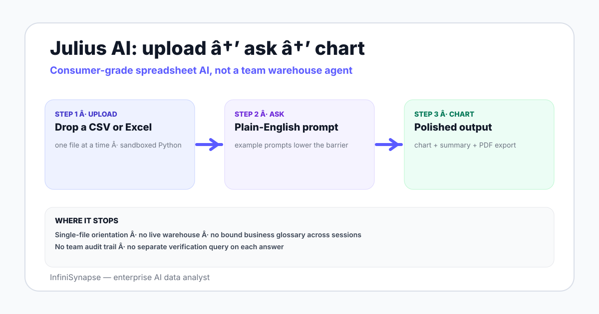

Julius AI for data analysis in 2026 — what it does well on spreadsheets, where it stops, how it compares to ChatGPT and enterprise data agents, and when to switch over.
AuthorInfiniSynapse Research, product and data architecture team
Published2026-06-28 · Last verified 2026-06-28 · Next review 2026-09-28
Evidence baseJulius AI official documentation and product pages, hands-on testing in 2026 across multiple file types, comparison with ChatGPT Advanced Data Analysis and warehouse-connected data agents.
Disclosure: This page is published by InfiniSynapse, which sells an enterprise AI data analyst that competes with Julius on some workloads. The review notes where Julius is the right call (consumer and individual analyst) and where a connected agent is — written so you can use the rubric to evaluate either tool.
TL;DR
Julius AI is a consumer-friendly chat surface for spreadsheet analysis — upload a CSV or Excel file, ask questions in plain English, get charts and summaries back. Python runs under the hood.
It is a good fit for individual analysts, students, and light business users who want a quicker UX than ChatGPT for one-off spreadsheet work — the chart UX and example prompts lower the activation energy.
The limits are the same shape as ChatGPT: single-file orientation, sandboxed Python, no direct warehouse connection, no shared business knowledge base, no enterprise audit trail.
Compared to enterprise data agents like InfiniSynapse, Julius covers a different audience — consumer and individual workflows rather than team workflows on production warehouses.
Switch when three signals appear: warehouse connection becomes a requirement, a shared business glossary becomes a requirement, and an evidence trail becomes a procurement requirement.
Julius AI is a consumer-friendly chat surface for spreadsheet analysis — upload a file, ask a question, get a chart and summary back. Python runs under the hood. It is a good fit for individual and consumer use cases on one file at a time. It is not built for warehouse-connected team analytics with shared definitions and an audit trail. Switch when those three needs appear.

Where Julius AI works well in 2026
Three patterns where Julius is the right choice:
Single-file CSV or Excel exploration. A vendor sends a 30MB CSV. You want a chart and a short summary. Julius does this in two prompts with cleaner default chart styling than ChatGPT.
Student and learning workflows. A statistics or data class assignment, a kaggle-style sample dataset. Julius makes the path from upload to insight short.
Small-business spreadsheet analysis. A merchant analyzes monthly Shopify exports without setting up a warehouse. The lift from upload to first chart is the smallest in the category.
The product's value is consumer UX over raw analytical depth — example prompts, default charts, polished export, and a friendly chat surface lower the barrier for users who would otherwise stop at the file picker.
Where Julius AI stops in 2026
Limit
What happens
Implication
Single-file orientation
One upload at a time; multi-file analysis is friction
Cross-source questions need a different tool
Sandboxed Python
Memory and time bounded
Tens of millions of rows do not fit
No direct warehouse connection
Every analysis starts from a manual export
Data drifts between Mondays; cross-team reuse is hard
No bound knowledge base
Each chat re-explains business definitions
Definition drift across sessions
No team audit trail
Chats are individual artifacts
Finance, regulated, or board-grade workflows do not pass review
None of the limits are surprising — Julius positions clearly as a consumer-friendly tool. The point is to read them as a fit-test for your workflow rather than as criticism.
Julius AI vs ChatGPT data analysis
Both run Python in a sandbox over a single uploaded file. The differences are surface-level rather than architectural:
Default chart styling. Julius produces polished charts with less prompting; ChatGPT outputs raw matplotlib that needs follow-up styling.
Example prompts. Julius leans into a tutorial-style starting point; ChatGPT expects you to know what to ask.
Export polish. Julius's PDF and slide exports are smoother for non-technical audiences.
Sandbox limits. Both hit similar walls around file size and row counts.
Verification step. Neither runs a separate verification query by default.
The honest read: Julius is the polished consumer version, ChatGPT is the all-purpose tool. For team analytics on a warehouse, both stop at the same wall. See the companion ChatGPT data analysis limits page for the deeper limit walkthrough.
Julius AI vs enterprise data agents
Dimension
Julius AI
Enterprise data agent (e.g. InfiniSynapse)
Primary audience
Individual / consumer / student
Data and analytics teams in companies
Source model
Single uploaded file at a time
Direct read-only connections to warehouses and operational DBs
Knowledge base
Per-chat context
Bound to the source, retrieved as a tool call before SQL
Verification
None by default
Plan + SQL + verification + evidence trail by default
Procurement fit
Self-serve, individual
Enterprise with SOC 2 / NIST AI RMF alignment
The categories serve different jobs. A solo founder learning Shopify analytics belongs on Julius. A finance analyst preparing a board number on Snowflake belongs on a connected agent. See what is a data agent and AI data analyst explained for the category framing.
A practical selection rubric
Five questions to triage in 10 minutes:
Is the analysis you do one file at a time, or does it cross multiple sources?
Will the same analysis be repeated by you next week, or by your teammates today?
Does someone — auditor, finance, board — ever ask how the number was produced?
Are the business definitions stable enough that re-explaining them every chat is painful?
Are you billing time on this analysis as part of your job, or doing it for yourself?
Three or more "single, individual, no-audit" answers → Julius is fine. Three or more "cross-source, team, audit-relevant" answers → switch to a connected agent. Mixed → keep Julius for personal exploration and run an agent pilot for the team workflow.
When and how to switch from Julius
Three signals say it is time:
You have re-explained the same business definitions in more than three Julius sessions in a week.
The CSV you upload comes from a warehouse you could query directly.
A teammate asks for the same analysis you just did and you cannot share it as a reproducible artifact.
The migration path is short. Pick a warehouse-connected agent. Connect read-only. Seed a small business glossary. Ask one question that crossed two sources and watch the plan, SQL, and verification step come back together. The handoff from Julius to a connected agent is a workflow shift, not a re-learning curve.
Julius is a great single-file tool. Team data analysis needs source connections and a shared glossary Julius does not provide.
Try a warehouse-connected data analyst with a bound knowledge base
Connect a Postgres, MySQL, Snowflake, or Supabase warehouse read-only. Seed a small knowledge base of business definitions. Ask one question that crossed two sources and watch the plan, SQL, and verification step before deciding whether to add an enterprise agent to your stack.
Julius AI is a consumer-friendly chat surface for spreadsheet data analysis. Upload a CSV or Excel file, ask questions in plain English, and get charts plus written summaries back. Python runs under the hood in a sandbox. The product positions clearly toward individual analysts, students, and small-business users who want a quicker UX than ChatGPT for one-off spreadsheet work.
What is the difference between Julius AI and ChatGPT data analysis?
Both run Python in a sandbox over a single uploaded file, so architecturally they sit in the same category. Julius produces polished charts with less prompting, leans into example prompts as a tutorial-style starting point, and ships smoother PDF and slide exports. ChatGPT is the all-purpose tool. For team analytics on a warehouse, both stop at the same wall — single-file orientation, no live source, no shared glossary, no verification step.
When should I use Julius AI for data analysis?
Three good-fit patterns: single-file CSV or Excel exploration where a vendor sent you a file and you want a chart and a short summary, student and learning workflows on sample datasets, and small-business spreadsheet analysis where you have not set up a warehouse. The value is the polished consumer UX — example prompts, default charts, friendly export — rather than raw analytical depth.
What are the limits of Julius AI?
Five limits define the category: single-file orientation makes multi-file analysis friction, the Python sandbox bounds memory and time so tens of millions of rows do not fit, no direct warehouse connection means every analysis starts from a manual export, no bound knowledge base means each chat re-explains business definitions, and no team audit trail means finance or regulated workflows do not pass review.
Is Julius AI better than ChatGPT for data analysis?
On consumer UX — chart styling, example prompts, polished exports — Julius lands a smoother experience than ChatGPT Advanced Data Analysis. On raw analytical depth and ecosystem breadth, ChatGPT covers more ground. Neither is the right fit for team analytics on a live warehouse with shared business definitions and an audit trail — both stop at the same wall.
What are the alternatives to Julius AI?
Four credible alternatives in 2026: ChatGPT Advanced Data Analysis for the same single-file pattern with broader ecosystem, warehouse-connected AI data analysts like InfiniSynapse for team workflows with a bound knowledge base and verification step, Databricks Genie or Snowflake Cortex Analyst for lakehouse-resident teams, and BI-native AI like Tableau Pulse or Power BI Copilot when a semantic model already exists.
When should I switch from Julius AI?
Three signals say it is time: you have re-explained the same business definitions across more than three Julius sessions in a week, the CSV you upload comes from a warehouse you could query directly, or a teammate asks for the same analysis you just did and you cannot share it as a reproducible artifact. Any one is enough; all three together is overdue.
Methodology and review notes
Last updated: 2026-06-28 · Next scheduled review: 2026-09-28
This review draws on the Julius AI public product pages and documentation, hands-on testing across multiple file types and question shapes in 2026, comparison runs against ChatGPT Advanced Data Analysis and InfiniSynapse, and field experience with teams that moved from Julius to a warehouse-connected agent. The rubric and switch signals reflect observed practice rather than vendor positioning.
Conflict of interest: InfiniSynapse publishes this guide and sells an enterprise AI data analyst. To reduce bias, the page leads with the topic itself, treats InfiniSynapse as one option among many, and links to external sources for every numeric claim.
Update cadence: Reviewed every 90 days for accuracy and link health.
Sources and references
[Vendor] Julius AI. Official product site. julius.ai.
[Vendor] OpenAI. ChatGPT Advanced Data Analysis help center. help.openai.com.